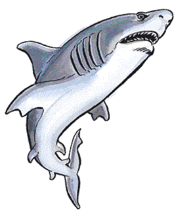

Previous • Random • Next
Fish
2140

| | #AP | AC | MV | HD | THAC0 | # AT | Dmg/AT | Morale | XP Value |
|---|
| Barracuda | 2-12 | 6 | Sw 30 | 1 to 3 | 1-2 HD: 19
3 HD: 17 | 1 | 2-8 | Steady (11) | 1 HD: 15
2 HD: 35
3 HD: 65 |
| Carp, Giant | 1-4 | 6 | Sw 18 | 8 to 12 | 8 HD: 13
9-10 HD: 11
11-12 HD: 9 | 1 | 2-20 | Average (9) | 8 HD: 3,000
9 HD: 4,000
10 HD: 5,000
11 HD: 6,000
12 HD: 7,000 |
| Catfish, Giant | 1 | 7 | Sw 18 | 7 to 10 | 7-8 HD: 13
9-10 HD: 11 | 1 | 3-12 | Average (9) | 7 HD: 2,000
8 HD: 3,000
9 HD: 4,000
10 HD: 5,000 |
| Dragonfish | 1 | 4 | Sw 6 | 2 | 19 | 1 | 1-6 | Unsteady (5) | 270 |
| Eel, Electric | 1-3 | 9 | Sw 12 | 2 | 16 | 1 | 1-3 | Unsteady (7) | 65 |
| Eel, Giant | 1-4 | 6 | Sw 9 | 5 | 15 | 1 | 3-18 | Average (8) | 175 |
| Eel, Marine | 1 | 6 | Sw 9 | 6 to 8 | 6-7 HD: 13
8 HD: 12 | 1
1
1 | 6 HD: 2-8
7 HD: 3-12
8 HD: 4-16 | Average (9) | 7 HD: 420
8 HD: 650
9 HD: 975 |
| Eel, Weed | 10-60 | 8 | Sw 15 | 1-1 | 20 | 1 | 1 | Unsteady (6) | 120 |
| Gar, Giant | 1-6 | 3 | Sw 30 | 8 | 13 | 1 | 5-20 | Average (10) | 2,000 |
| Lamprey | 1-2 | 7 | Sw 12 | 1+2 | 19 | 1 | 1-2 | Unsteady (7) | 65 |
| Lamprey, Giant | 1-4 | 6 | Sw 9 | 5 | 15 | 1 | 1-6 | Average (9) | 270 |
| Lamprey, Land | 2-12 | 7 | 12 | 1+2 | 19 | 2 | 1 hp/round | Unsteady (7) | 120 |
| Manta Ray | 1 | 6 | Sw 18 | 8 to 11 | 8 HD: 13
9-10 HD: 11
11 HD: 9 | 1 | 3-12 or 2-20 | Elite (13) | 8 HD: 3,000
9 HD: 4,000
10 HD: 5,000
11 HD: 6,000 |
| Pike, Giant | 1-8 | 5 | Sw 36 | 4 | 17 | 1 | 4-16 | Average (8) | 175 |
| Piranha | 5-50 | 8 | Sw 9 | ½ | 20 | 1 | 1-2 | Unsteady (6) | 7 |
| Pungi Ray | 1-3 | 7 | Sw 12 | 4 | 17 | 1-12 | 1-4 | Unsteady (5) | 975 |
| Quipper | 5-50 | 8 | Sw 9 | ½ | 20 | 1 | 1-2 | Unsteady (6) | 7 |
| Sea Horse, Giant | 1-20 | 7 | Sw 21 | 2 to 4 | 2 HD: 19
3-4 HD: 17 | 1 | 1-4, 2-5, or 2-8 | Average (10) | 2 HD: 35
3 HD: 65
4 HD: 120 |
| Shark | 3-12 | 6 | Sw 24 | 3 to 8 | 3-4 HD: 17
5-6 HD: 15
7-8 HD: 13 | 1 | 3-4 HD: 2-5
5-6 HD: 2-8
7-8 HD: 3-12 | Average (10) | 3 HD: 65
4 HD: 120
5 HD: 175
6 HD: 270
7 HD: 420
8 HD: 650 |
| Shark, Giant | 1-3 | 5 | Sw 18 | 10 to 15 | 10 HD: 11
11-12 HD: 9
13-14 HD: 7
15 HD: 5 | 1 | 10-11 HD: 4-16
12-13 HD: 5-20
14-15 HD: 6-24 | Steady (11) | 10 HD: 2,000
11 HD: 3,000
12 HD: 5,000
13 HD: 6,000
14 HD: 7,000
15 HD: 8,000 |
| Sting Ray | 1-3 | 7 | Sw 9 | 1 | 20 | 1 | 1-3 | Unsteady (5) | 120 |
 Giant fish are a diverse group of creatures with varying attack and defense capabilities. Many of these creatures are able to swallow victims whole. Swallowed victims take normal bite damage. Victims take 1 point of damage per round from the fish's digestive juices and have a 5% cumulative chance per round of suffocating. To escape the fish's stomach, a victim can cut free with a sharp-edged weapon. The victim may be rescued by cutting or tearing from the outside. When the fish has lost 50% of its hit points, the victim breaks free.
Giant fish are a diverse group of creatures with varying attack and defense capabilities. Many of these creatures are able to swallow victims whole. Swallowed victims take normal bite damage. Victims take 1 point of damage per round from the fish's digestive juices and have a 5% cumulative chance per round of suffocating. To escape the fish's stomach, a victim can cut free with a sharp-edged weapon. The victim may be rescued by cutting or tearing from the outside. When the fish has lost 50% of its hit points, the victim breaks free.
Barracuda
The first clue that a barracuda is in the area might be a sudden pain in the foot, as the marauder swims by and bites off a few tender toes. They are found in warm salt waters.
Carp, Giant
Giant carp attack by biting, inflicting 2-20 points of damage with their sharp, curved teeth. Additionally, if an attack causes 12 or more points of damage, the carp swallows its victim.
Catfish, Giant
A giant catfish bites for 3d4 points of damage. It swallows it prey if its attack roll is 4 points more than it needed. The fish can employ its feelers as weapons by whipping its head back and forth. These feelers secrete a toxin that causes 2d4 points of damage. A save vs. poison limits the damage to 1d4 points. Two additional opponents can be attacked if they are within range of the feelers.
Dragonfish
Dragonfish bite for 1-6 points of damage. However, most adventurers stumble across these creatures. These encounters cause 1d6 of the fish’s spines to penetrate boots, causing 1 point of damage apiece before snapping off in the wound. The spines’ poison is slow-acting, and creatures injected with the toxin must make a saving throw vs. poison at a -4 or dies. If successful, the character suffers a -2 penalty on all attack rolls for the next 1d12+4 hours.
Eel, Electric
An attacking eel discharges a jolt of electricity with a 15-foot-radius range. Creatures less than 5 feet from the eel suffer 3d8 points of damage, creatures 5 to 10 feet away receive 2d8 points, and all others in range suffer 1d8 points. An eel must recharge itself for an hour between attacks. It is immune to electrical effects.
Eel, Giant
Giant eels have no electrical discharge attack. Instead, they attack with their teeth. Since they strike with amazing speed, giant eels receive a +1 bonus to initiative rolls.
Eel, Marine
Marine eels have an electrical discharge with a range of 15 feet; creatures less than 5 feet from the eel suffer 6d6 points of damage, those 5 to 10 feet away receive 4d6 points, and all others in range suffer 2d6 points. Victims must roll a saving throw vs. paralyzation or be stunned for a number of rounds equal to the damage they sustained from the electrical shock. This eel, too, is immune to electrical effects.
Eel, Weed
The bite of the weed eel is poisonous; victims failing a saving throw vs. poison die in 1d4 rounds. Weed eels are at home in both fresh and salt water, 25 to 40 feet deep. Each colony has a lair consisting of a central cave, roughly 30 feet long and 20 feet wide and high. The floor of the central cave is covered with small stones, coins, and gems that the eels have scavenged. Radiating from this central cave are a series of 6-foot-diameter tunnels, which in turn lead to a network of 6 to 8-inch-diameter holes. These are the homes of the individual eels that make up the colony. Weed eels are fiercely protective of their lairs, especially the central cave where their young are raised.
Gar, Giant
The gar attacks with its teeth, inflicting 8d4 points of damage. On a score of 20, the gar swallows its victim whole. On average, a giant gar can swallow an object up to 5 feet long. Giant gars are found in deep, freshwater lakes and rivers.
Lamprey
The lamprey feeds by biting its victims, and fastening itself by its sphincter-like mouth. Once attached, the lamprey drains 2 hit points per Hit Die of blood on the next and successive rounds. Sea lampreys are especially susceptible to fire, making their saving throws against fire-based attacks with a -2 penalty.
Lamprey, Land
Land lampreys feed as do aquatic ones. Once attached (a hit for 1 point of damage), it drains blood for three rounds, unless killed or removed, for 1 point of damage per round. In addition, while attached to a character, each lamprey encumbers an individual; this is equivalent to a loss of 1 point of Dexterity per lamprey attached.
Manta Ray
If the manta's attack roll is 2 or more greater than the number needed to hit, it swallows its prey. A manta ray can swallow one man-sized creature or three small-sized creatures. If opponents attack its rear, it uses its stinger for 2-20 points of damage; victims must save vs. paralyzation or be stunned for 2-8 rounds.
Pike, Giant
Because of its speed and natural camouflage, a pike’s opponents suffer a -2 penalty to their surprise roll. Giant pike inhabit deep, freshwater lakes.
Piranha
Piranhas travel in schools of 5-50. There is a 75% chance that at least one will attack any creature that swims or wades near the school. If they attack and blood is drawn, the entire school goes berserk and each piranha attacks twice per melee round. Up to 20 piranhas can attack a single, man-sized individual simultaneously.
Pungi Ray
Any creature stepping on a pungi must save vs. poison or die. A footstep on a pungi ray equals one attack; if a creature fell on a pungi ray it would suffer 2-8 spinal attacks. If attacked, it swims away.
Quipper
Quippers are freshwater piranhas that live in colder waters.
Seahorse, Giant
A sea horse attacks with a head butt, but a sea horse trained as a steed can use its long tail to constrict and restrain enemies. A captured opponent can free itself with a open doors roll made with a -1 penalty. The tail of a giant sea horse is so long it can attack the same opponent its head butts, or the one its rider is attacking. The constriction causes no damage, but the sea horse can still butt the helpless victim.
Shark
Sharks attack mercilessly at the scent of blood, which they can detect a mile away. The scent of blood and the thrill of the kill sends sharks into a feeding frenzy. Since sharks move up, take a bite of flesh, and retreat, 10 normal-sized sharks can attack a man-sized opponent.
Shark, Giant
The huge megalodons (giant sharks) never reach a frenzy, since they can swallow most creatures whole on an attack roll 4 greater than minimum number needed to hit.
Sting Ray
If a creature steps on a sting ray, it lashes out with its tail spine. The creature must save vs. poison or be paralyzed for 5-20 turns.

Previous • Random • Next
◆ 700 ◆